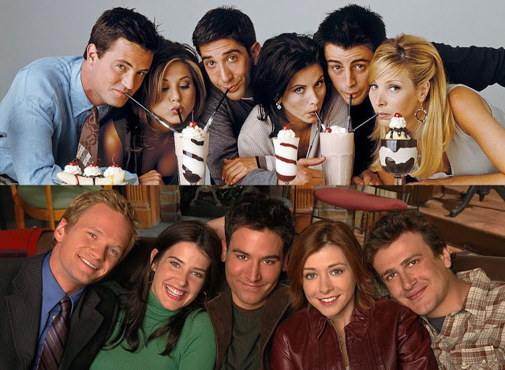

"Ross, Rachel, Mônica, Chandler, Joey e Phoebe formam um grupo de seis amigos que lutam para se sobressair e progredir na competitiva vida de Manhattan. Seu humor inteligente e apoio mútuo incondicional fazem com sua amizade seja cada vez mais forte, superando assim todos os obstáculos que a vida lhes apresenta."
"Em 2030, o arquiteto Ted Mosby (Josh Radnor) conta a história sobre como conheceu a mãe dos seus filhos. Ele volta no tempo para 2005, relembrando suas aventuras amorosas em Nova York e a busca pela mulher dos seus sonhos"